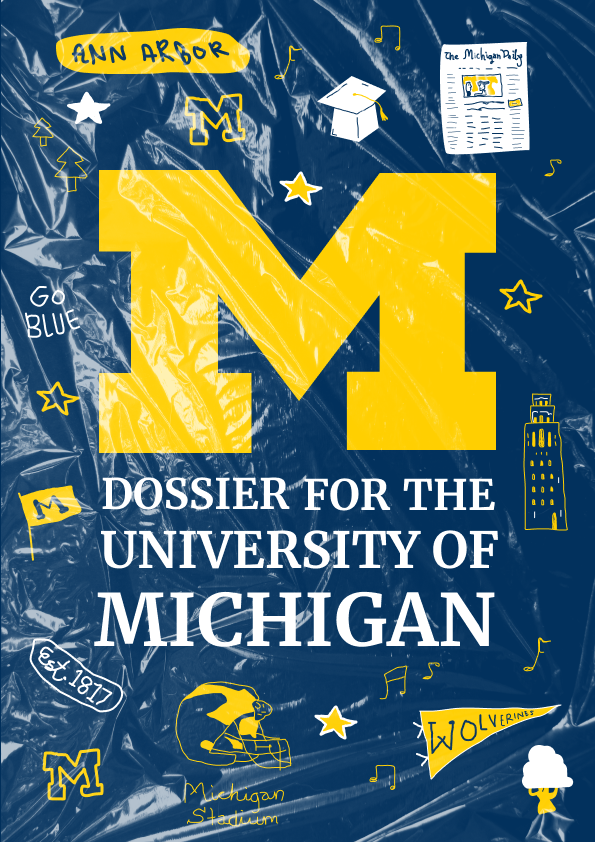
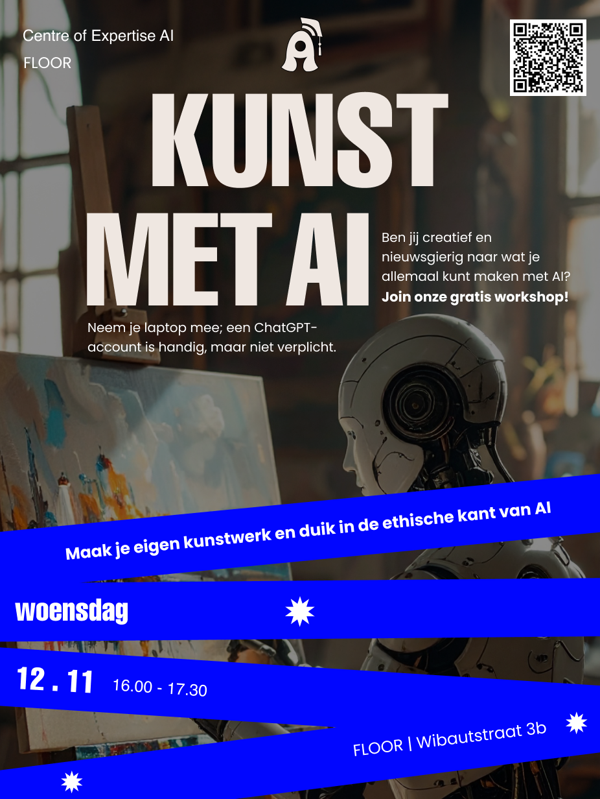
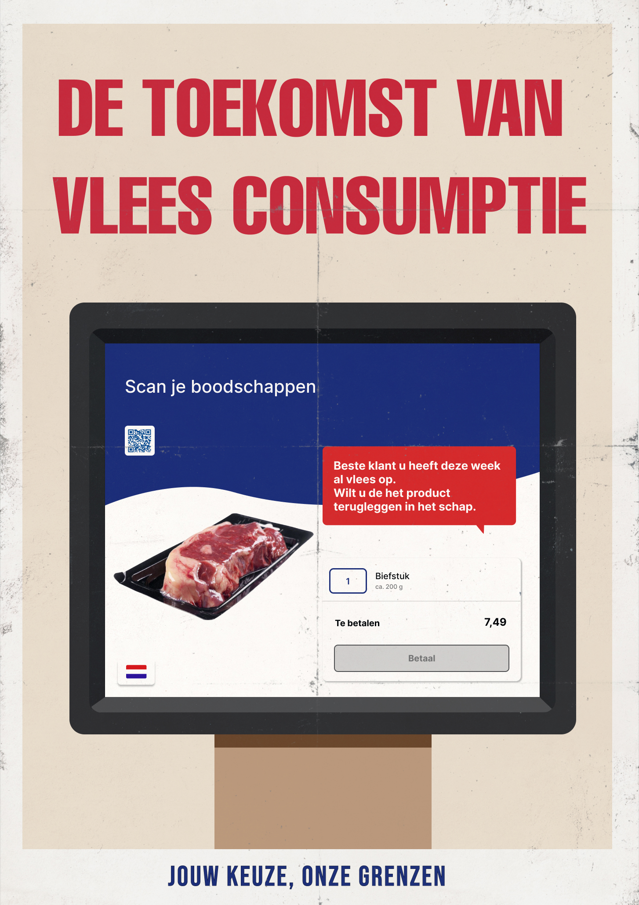
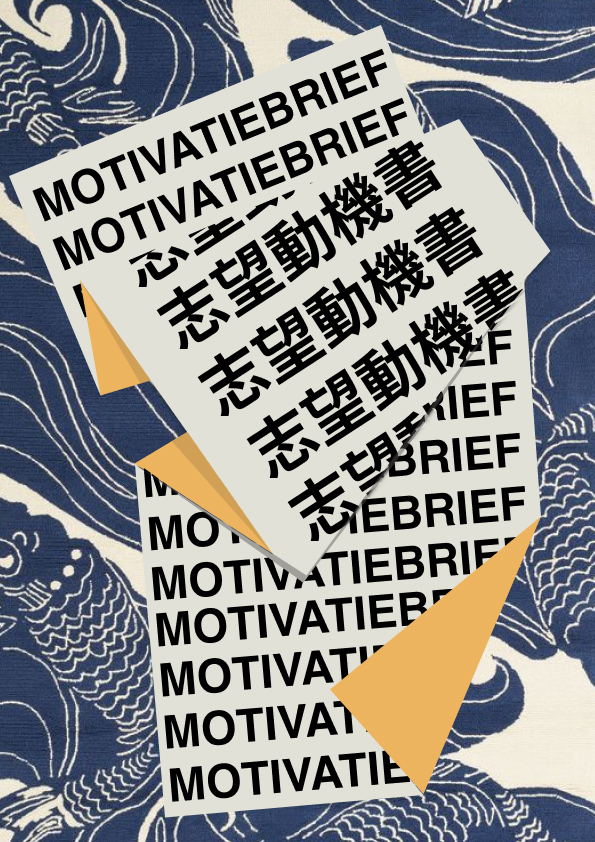
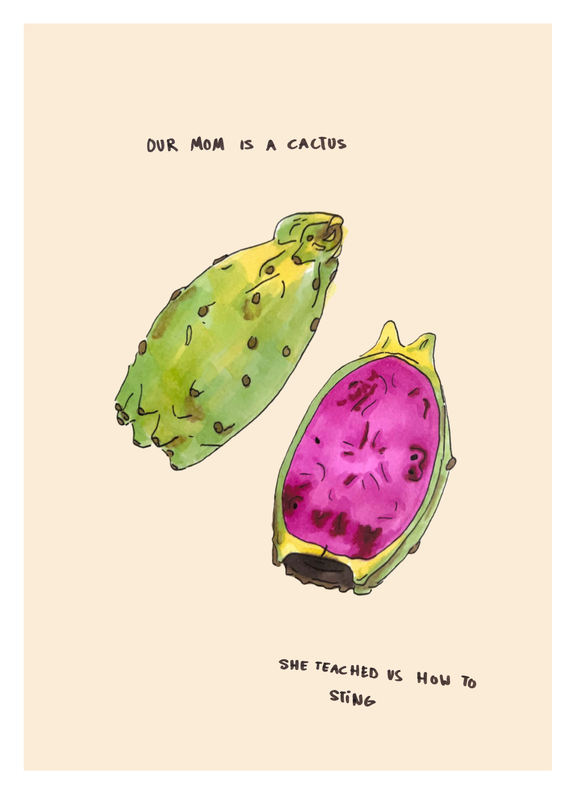
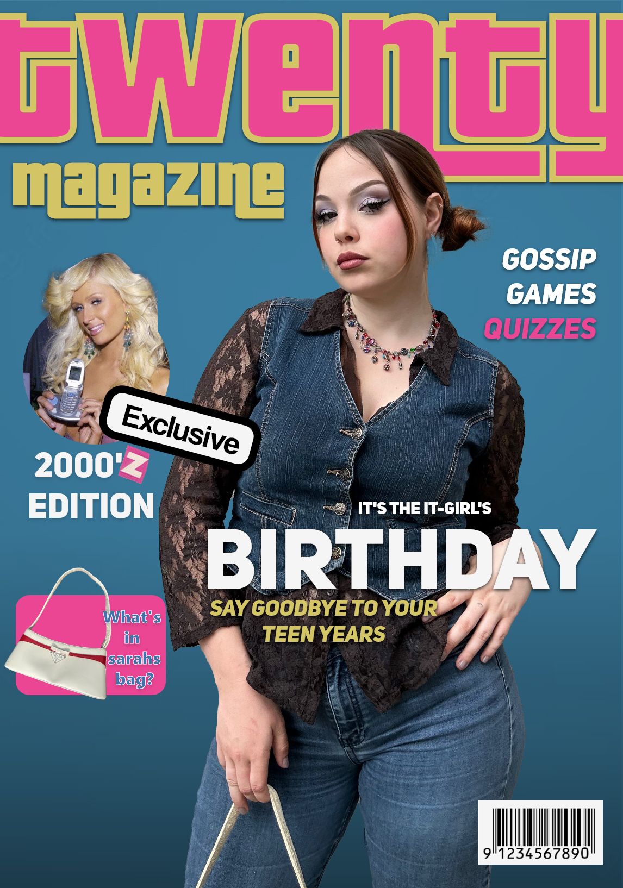
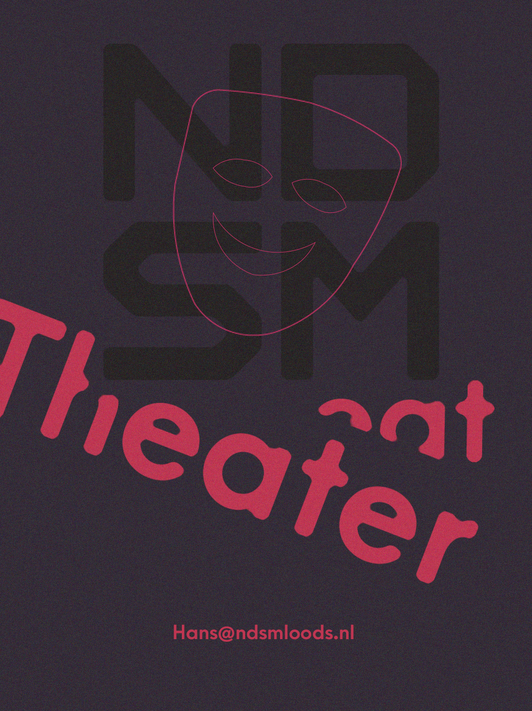
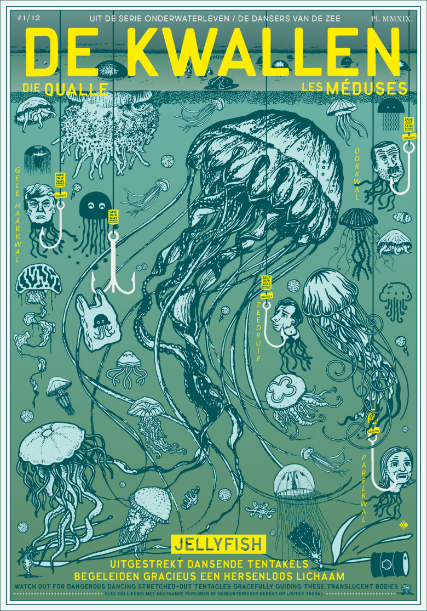

"As an all-around digital designer, I actively engage in visual design, channeling my creativity and
skills to enhance various facets of digital projects."
Posters







Onepagers for fictional restaurant
I crafted two creative one-pagers for an imaginary restaurant, drawing inspiration from
designer Petra Janssen. Notably, I added a unique touch by handcrafting the restaurant's
logo.
Inspiration
Petra Janssen uses a variety of different shapes and colors in her work. I loved the
colorpallete of her work "the kwallen" so I decided to use it as inspiration for my
onepager. I also used her technique where she used letters and shapes together and even
piles them up. She is very creative and isn't scared to make her designs look
expressive.

Hand written name logo
I hand written the logo for Boutis. I used modern cursive typography.